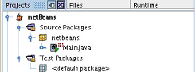
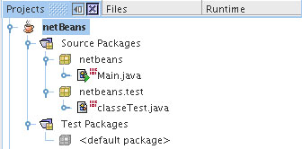
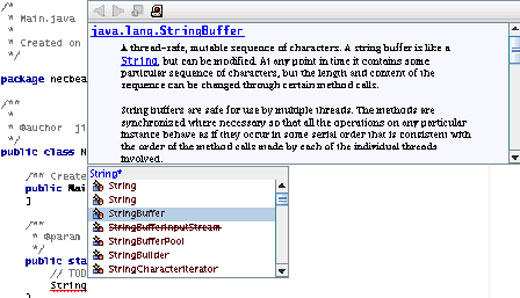
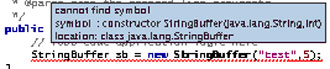
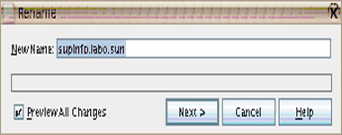
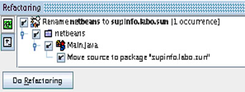
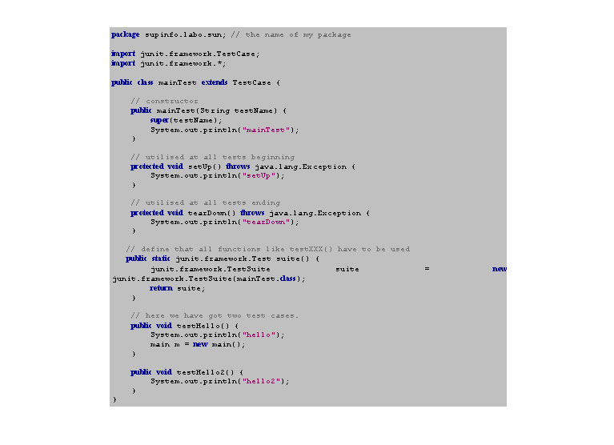
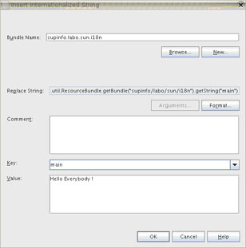

Vamos entrar em Arquivo -> Novo projeto
{kind=link}
O NetBeans propõe modelos de projetos prontos para uso:
- Para um aplicativo padrão (para linhas de comando de software, interfaces gráficas,...).
- Para sites da Web. A versão 4.1 irá fornecer modelos para J2EE, tal como os serviços da Web EJB.
- Um item de menu de "amostra" que contém exemplos de código.
Nós iremos criar um projeto em Padrão -> Aplicativo Java, denominado "NetBeans".

Há dois pacotes:
"Pacotes de código-fonte" que contêm seu código-fonte. Nós iremos colocar seus arquivos, figuras...
"Pacotes de teste" que contêm o código-fonte de arquivos JUnit. O JUnit é uma estrutura de teste (o veremos mais adiante).
Aviso: estes pacotes não são os mesmo que os da linguagem Java.
Se desejarmos adicionar um novo elemento em nosso software, selecione o projeto na aba Projeto, e selecione o menu Arquivo -> Novo arquivo ...
{kind=link}
Temos nesta janela muitos modelos de arquivos, pacotes e servlets Java, ou interfaces gráficas Swing.
Aqui nós criamos a classe Java:
Classes Java -> Classe Java
Lhe aconselho a testar muitos destes tipos de modelos para entender as funcionalidades do NetBeans.
Antes que esqueça, criei dois pacotes Java: netbeans e netbeans.teste, e duas classes Java: Main.java e Test.java.

Se você deseja criar um arquivo de modelo, clique com o botão direito do mouse em um arquivo de projeto e selecione Salvar como modelo ...
Veremos mais adiante como compilar, executar e distribuir um projeto.
Arquivos suportados:
Um IDE tem de suportar arquivos de uso comum para ajudar no trabalho do programador. O NetBeans pode reconhecer a estrutura destes arquivos, colorindo alguma palavras léxicas e sintaxes:
- arquivo Java com palavras léxicas e sintaxes coloridas, conclusão automática e correção de erro
- xml, com sintaxe colorida, e gerador de dtd e xsl e um validador
- html e css, com sintaxe colorida
Auto-conclusão:
A conclusão automática, algumas vezes chamada de "inteligência" em alguns outros IDEs, permitem sugerir o fim de suas palavras. Um exemplo seria bom para entendê-lo:
Aqui começamos uma nova linha e escrevemos "String", ao pressionar CTRL-Espaçoe, um menu suspenso é aberto com o noe de classes e interfaces utilizáveis e até uma documentação está visível:

A documentação Java é desta forma integrada no NetBeans, como acabamos de ver.
Correção automática:
Ao escrever a linha a seguir:
StringBuffer sb = new StringBuffer("test",5);
O NetBeans a sublinha. O motivo é que nenhuma construtor está disponível para estes dois argumentos, como o NetBeans o indica:

A corrreção automática está disponível mesmo antes de compliar o arquivo.
Refatoração:
A refatoração é uma funcionalidade que permite renomear pacotes ou arquivos, sem precisar escrever/modificar uma linha de código. Se você deseja renomear um pacote, por exemplo, selecione-o na aba Projeto e escolha no menu Refatoração -> Renomear ...

Clique em "Próximo" e verá um resumo de todas as ações que serão executadas pelo NetBeans:

Ao clicar em "Fazer refatoração", o pacote "netbeans" será renomeado para "supinfo.labo.sun", e o arquivo main.java será movido para o novo pacote.
Organização de arquivos:
Podemos ver diferentes arquivos em diferentes diretórios:
- build contém os arquivos de classes.
- dist contém os arquivos finais de seu projeto. Há um jar de seu aplicativo e o javadoc.
- nbproject contém os arquivos de configuração ant, que determina como compilar, executar, implementar... um projeto.
- src contém o código-fonte do projeto.
- test contém os arquivos de teste do projeto (veremos mais adiante o JUnit).
- outros arquivos: build.xml é usado para compilar (este é um arquivo ant) e manifest.mf para definir o projeto.
Gerar arquivos de documentação
A criação da documentação permite que outros programadores entendam a arquitetura de seu código. Nós podemos usar a ferramenta javadoc, fornecida no JDK, através da interface gráfica do NetBeans.
O javadoc usa os comentários em seu código para escrever os arquivos de documentação (com os símbolos /** @authi nome_do_autor */, por exemplo).
Ao selecionar no menu Build -> Gerar javadoc para o projeto, a documentação é feita. Você pode consultá-la no arquivo dist/javadoc de seu projeto.
Compilação automática:
A compilação é executada por arquivos xml, interpretados pelo Ant. Sem necessidades especiais, esta parte é automaticamente gerada.
A compilação é automática na execução do software ao selecionar Executar ---> Executar projeto principal ... A compilação pode ser inciciada manualmente ao selecionar no menu Build -> Build o projeto principal. O arquivo jar do aplicativo estará localizado no diretório "dist" no diretório raiz do aplicativo (que você pode ver na aba "Arquivos").
O arquivos xml que devem ser usados pelo Ant são automaticamente gerados nos arquivos "nbproject" no diretório raiz do aplicativo. Eles serão ausados mais tarde na compliação, no momento da geração da documentação e no momento da inicialização.
Caso não saiba como o ant está funcionando, sugerimos ler a documentação oficial.
"Hora de depurar"
Enquanto estiver escrevendo seu código, é importante controlar cada parte da execução de seu software. Caso deseje iniciar seu aplicativo etapa por etapa, aqui estão os três estágios:
- É preciso colocar pontos de quebra em seu código ao clicar com o botão direito do mouse em seu código-fonte -> alternar Ponto de quebra
- Selecione no menu Executar -> Depuração , e o projeto será automaticamente compilado e iniciado.
- Seu programa irá pausar no primeiro ponto de quebra encontrado. O menu Executar lhe oferece muitas funcionalidades, como: Executar -> Passar sobre, Executa -> Executar até o cursor, ...
A janela em Janela -> Depurar lhe oferecerá diversas informações sobre variáveis, threads, ...
- Na próxima captura de tela, você verá três coisas importantes:
- Pontos de quebra coloridos em vermelho
- A linha verde, que mostra onde seu software parou
- Abaixo, podemos ver os objetos de fato usados
Testar classes (estrutura Junit):
Os testes estão crescendo de importância na medida em que seus projetos são maiores e maiores. É impensável escrever os mesmos em um função main(). Nós deveríamos organizá-los em classes de teste, criando uma classe de teste para cada classe em seu aplicativo. Desta forma, a estrtura JUnit permite simular a execução de seu aplicativo.
Como criar um teste:
- Coloque o cursor em uma classe na aba "Projeto".
- Clique com o botão direito do mouse em ---> Ferramentas ---> Testes JUnit ---> Criar teste ... e valide a janela que é mostrada com as opções padrão.
- Uma classe em "Pacotes de teste" será criada. Essa estende um TestCase e essa classe da estrtura JUnit permite criar os testes.
Aqui está uma exemplo para uma classe JUnit:

Essa classe JUnit pode ser iniciada a qualquer momento, na interface do NetBeans, ao selecionar Executar ---> Executar outro ---> Arquivo de teste.
Neste caso, a classe JUnit faz a saída destas sequências de caracteres:
maintTest
setUp <--- at testHello() execution
hello
tearDown
setUp <--- at testHello2() execution
hello2
tearDown
Você pode consultar um bom tutorial sobre o JUnit em seu site da Web oficial: http://junit.sourceforge.net/doc/testinfected/testing.htm
Internacionalização:
O NetBeans permite usar as funções java (i18n) de internacionalização.
Crie um novo projeto padrão, com uma nova classe e escreva esta linha no método main():
- System.out.println();
- Ferramentas ---> Internacionalização ---> Inserir a sequência de caracteres de internacionalização ...

O NetBeans irpa inserir um valor em sua linha:
- System.out.println(java.util.ResourceBundle.getBundle("supinfo/labo/sun/i18n").getString("key_name"));
- Na aba "Projeto", selecione o arquivo de conjunto, clique com o botão direito do mouse em ...>Adcionar local..., e a seguir selecione o novo valor.

Para selecionar valores de chave, você pode usar valores finais no pacote java.util.Locale, tal como Locale.FRANCE, Locale.CANADA_FRENCH, Locale.CHINESE, ... Você terá que colocar o valor do local no segundo argumento do método getBundle():
- System.out.println(java.util.ResourceBundle.getBundle("supinfo/labo/sun/i18n",Locale.JAPAN).getString("key_name"));
Usando o CVS
O Trabalho em Equipe permite sincronizar seu trabalho com seus companheiros. O NetBeans fornece um cliente CVS incorporado. Nós iremos conectar ao servidor CVS do projeto NetBeans.
Vamos usar o cliente CVS:
- Versão ---> Gerenciador de versão ...
- Clique em Adicionar, para adicionar um novo diretório de trabalho.
- Insira esta informação:
- Diretório de trabalho: o diretório em seu sistema operacional para onde o código-fonte deverá ser enviado.
- Tipo de servidor CVS: pserver
- Nome do servidor CVS: cvs.netbeans.org
- Porta: 2401
- Nome do usuário: anoncvs
- Repositório: /cvs

- "Executar retirada" tem de ser selecionado.
- Clique em "Próximo" na parte inferior da janela e finalmente em "Terminar".
O NetBeans irá baixar os arquivos de código-fonte. Levará bastante tempo para retirar todos os arquivos de código-fonte, mas você pode cancelar, pois era somente um teste.
Conectando com o banco de dados:
A maioria dos softwares da Web trabalham com um banco de dados, permitindo salvar informações. O NetBeans tem uma ferramenta incorporada para se conectar com um banco de dados.
Iremos testar essa parte como MySql. Primeiro, você terá que baixar os drivers deste site da Web:
http://dev.mysql.com/downloads/connector/j/
- Selecione a aba "Executável" e o submenu "Banco de dados"
- Clique com o botão direito do mouse em Drivers, Adicionar drivers ... e selecione o driver MySQL (ele é um arquivo jar).
- Selecione seu driver no subdiretório Driver, e crie uma conexão ao clicar com o botão direito do mouse em ---> Conectar usando ... Para este teste nós inserimos as seguintes informações:
- Database Url : jdbc:mysql://localhost:3306/mysql (onde localhost é nossa máquina local e onde o domínio mysql está sendo executado).
- Nome de usuário e senha: ... são os seus ... !
Você pode selecionar dados, criar tabelas, criar vistas (mas esta funcionalidade ainda não existe no MySQL).
Comentário automático:
Há uma editor gráfico que irá ajudá-lo a escrever seus comentários nas classes Java. Para usá-lo, clique com o botão direito do mouse em uma classe Java, na aba "Projeto" ou "Arquivo", e selecione Ferramentas -> Comentário automático ...
Uma interface irá mostrar todos os métodos, classes que podem ser comentados... é muito fácil e mais atrativo que escrever-los a mão.